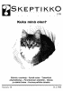
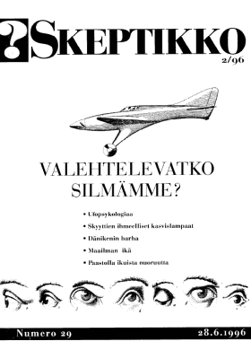
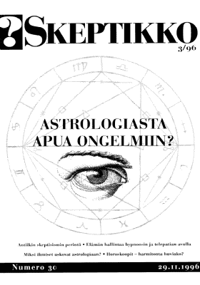
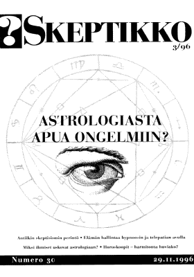
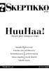
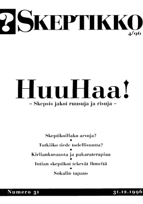

Skeptikko-lehti 1996
Ellei sinulla jo ole tietokoneellasi pdf-muodossa olevan tiedoston lukemiseen tarvittavaa
Acrobat Reader -ohjelmaa, saat sen ladattua maksutta tästä kuvakkeesta:

Skeptikko on Skepsis ry:n neljä kertaa vuodessa ilmestyvä jäsenlehti. Tästä verkkoversiosta löydät koko lehden sisällön PDF-muodossa.
 Skeptikko 28, 1/1996
- Marketta Ollikainen: Tietääkö kissa olevansa kissa?
- Ihmisiä, eläimiä, robotteja
- Anssi Saura: Pyhä sota tiedettä vastaan
- Toimitukselta
- Leenä Tähtinen: Tieteellistä aikamatkailua
- Matti A. Miettinen: Havaintoja ja ajatuksia parantamisen ”oikoteistä”
- Yhdistys toimii
- Huuhaa-palkinto Yleisradiolle
- Lauri Saxén: Oikea ja väärä tieto
- Tiit Kändler: Epäily ei suojele möröiltä Virossa
- Lyhyesti
- Keskustelua
- Tulevia tapahtumia
 Skeptikko 29, 2/1996
- Jukka Häkkinen: Uskommeko mitä näemme?
- Kari Pylkkänen: Ufot, ympäristön kokemisen psykologiaa
- Toimitukselta
- Timo Kaitaro: Skyyttian kasvislampaat
- Denis Diderot: Agnus Scythius
- Nils Edelman: 6000 vuotta maailman synnystä
- Jorma Mäntylä: Kun Dänikenin kupla puhkesi
- Sinikka Raivio: Miksi paastota
- Randin miljoonapotti
- Yhdistys toimii: Heinosesta 500. jäsen
- Lyhyesti
- Kirjat
- Lehdet luin
- Keskustelua
- Tulevia tapahtumia
- Kesäpakina
  Skeptikko 30, 3/1996
 Skeptikko 30, 3/1996
- Marketta Ollikainen:
- Antiikin skeptisismin perintö
- Hume ja antiikin skeptikot
- Pyrrhonilaista skeptisismiä
- Homeopaattinen pulukeitto
- Toimitukselta
- Ufometsästystä Hanasaaressa
- Ilpo V. Salmi:
- Elämänhallintaa hypnoosin ja telepatian avulla
- Siirtyykö klassinen hypnoosi tieteen historiaan?
- Telepatiaa metsästämässä
- Nils Mustelin: Ongelmallinen Mars-ilmiö
- Outi Lillqvist: Mihin ihmiset tarvitsevat astrologiaa?
- Paul Kurtz ja Andrew Fraknoi: Horoskoopit – harmitonta huviako?
- Yhdistys toimii: Skeptikoilla työsarkaa Virossa
- Lyhyesti
- Kirjat
- Keskustelua
  Skeptikko 31, 4/1996
- Arto Siitonen: Ettäkö skeptikoillakin arvoja!
- Toimitukselta
- Yhdistys toimii: Skepsis jakoi risuja ja ruusuja
- Sokrates-palkinto
- Huuhaa-palkinto
- Kirjayhtymän vastine
- Huuhaa ei kuulu hoitotieteeseen
- Lauri Gröhn: Kiriliankuvausta ja pakaraterapiaa
- Sami Pihlström: Tutkiiko tiede todellisuutta?
- Juha Savolainen: Tapaus Sokal eli elääkö Elvis
- Pekka Elo: Ihmeitä vastaan Intiassa
- Robert Brotherus: Elämää suuremmat Prometheus-leirit
- Lyhyesti
- Kirjat
- Tulevia tapahtumia
- Keskustelua
Kaikkien artikkelien © Copyright 1996 Skeptikko-lehti ja kirjoittaja.
Kirjoitukset vapaasti siteerattavissa ja levitettävissä ei-kaupallisiin tarkoituksiin, lähteeksi mainittava kirjoittajan lisäksi Skeptikko-lehti numeroineen.


{kind=link}
{kind=link}
{kind=link}